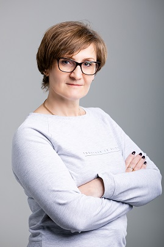

Вот это - я. Фото свежее.
Закончила МарГУ, ФМФ в 1999 году. Сразу начала преподавать на любимой кафедре прикладной математики. С 2007 года перешла работать в Лицей "Мегатех", где работала завучем и директором. С родной кафедрой рассталась в 2009 году. С 2016 года работаю в образовательных проектах ispring. Преподаю информатику и программированив в Лицее "Инфотех" и ИПС.
Занимаюсь лицензированием Университета, образовательными программами, административным документальным сопровождением с марта 2021 года, как раз год прошел.
Мои увлечения:
Хочу видеть людей счастливыми. Для меня счастье - это делать то, что вдохновляет, и быть рядом только с теми людьми, которых любишь и уважаешь. Предпочитаю честность, аккуратность, точность.